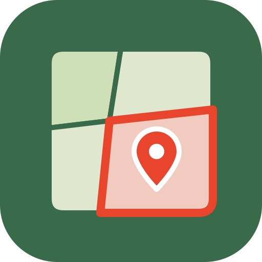
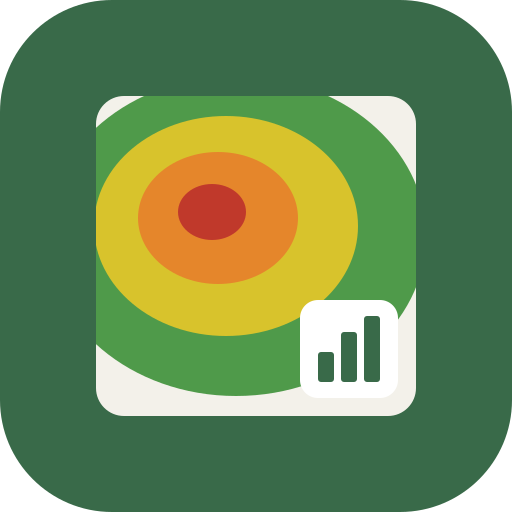

Apps, desarrollo a medida y gestión forestal desde Olba (Teruel)
Tecnología y ruralidad.
En L'Abelluco trabajamos con herramientas digitales, educación ambiental y gestión del medio natural para entender y cuidar el territorio. Lo hacemos desde el mundo rural y con los valores de la economía social y solidaria.
Qué hago
-
Apps propias
Aplicaciones para entender y cuidar el territorio, en Google Play (Android) y en el navegador (web).
Las apps -
Desarrollo a medida
Aplicaciones multiplataforma y proyectos de electrónica con plataformas como Arduino, micro:bit o Compluino.
Más información -
Asesoramiento en nuevas tecnologías
Ayuda para elegir, implantar y aprender a usar herramientas digitales, con preferencia por el software libre.
Más información -
Educación ambiental
Diseño de programas, actividades y materiales, y asesoramiento a equipamientos de educación ambiental.
Más información -
Gestión del medio natural
Gestión forestal y del medio natural: inventarios, cartografía y SIG, y apoyo a la custodia del territorio.
Más información
Las apps
-

Terra Bloc: el terreno, en un bloque que puedes imprimir
Elige una parcela del Catastro o dibuja una zona en cualquier lugar del mundo. Terra Bloc crea un modelo 3D con la imagen aérea y lo convierte en una pieza sólida para la impresora 3D, con el tamaño en milímetros.
- Relieve de 5 m del IGN en España y de ~30 m en el resto del mundo
- Ortofoto, color por altitud o aspecto de maqueta
- Sólido cerrado con base, a la escala que elijas
- Exportación a STL y OBJ con Terra Bloc Pro
-

Terra Rutes: tus rutas, sobre el relieve
Abre tracks GPX o KML y míralos sobre el mapa y el relieve 3D, con el perfil de altitud coloreado por pendiente. Únelos, edítalos y corrige sus altitudes con el modelo del terreno.
- Distancia, desniveles y tiempo estimado MIDE
- Unir tracks en el orden y el sentido correctos
- Mover puntos, recortar y limpiar los saltos del GPS
- Exportación a GPX para el GPS, el móvil o Wikiloc
-

Terra Parcel·les: tus parcelas, siempre a mano
Guarda las parcelas del Catastro una sola vez, con notas, fotos y etiquetas, agrúpalas en fincas y ábrelas en las otras apps Terra.
- Por referencia catastral o tocándola en el mapa
- Superficie, cultivos y enlace a la Sede del Catastro
- Fincas y agrupaciones, con la superficie total
- Perímetro en GPX o KML para recorrerlo en el campo
-

Terra Anàlisi: el relieve de una parcela, en mapas y cifras
Elige una parcela del Catastro o dibuja una zona en cualquier lugar del mundo. Terra Anàlisi crea los mapas de altitud y de pendiente sobre la imagen aérea, el resumen del relieve y la vista 3D.
- Relieve de 5 m del IGN en España y de ~30 m en el resto del mundo
- Altitudes, desnivel y pendientes media y máxima
- Vista 3D del terreno, que puedes girar y ampliar
- Orientación, sombreado, superficie por clases e informe PDF con Terra Anàlisi Pro
-

Terra Camp: mide la parcela y compárala con el Catastro
Recorre la parcela con el móvil y toma cada esquina con el GPS. Terra Camp calcula su superficie y la compara con la del Catastro: ves enseguida si las lindes del campo son las del mapa.
- Media de varias lecturas del GPS en cada vértice
- Diferencia de superficie en m² y en %, pintada en el mapa
- Vista 3D del relieve con la parcela y la medición
- Exportación e informe PDF con Terra Camp Pro